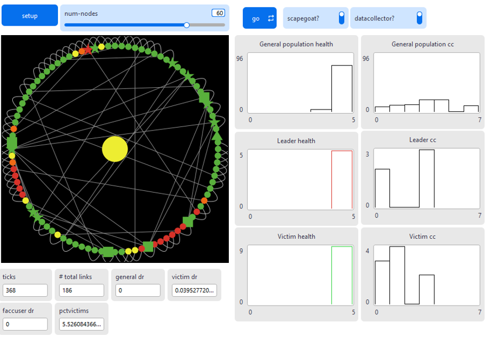
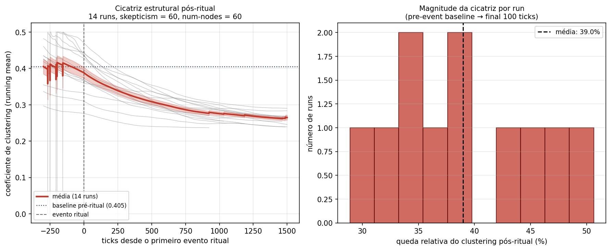
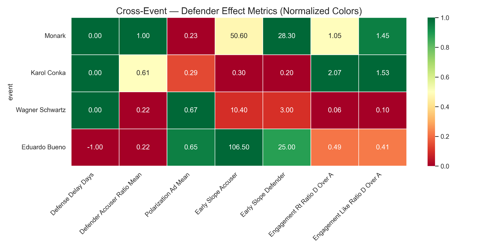
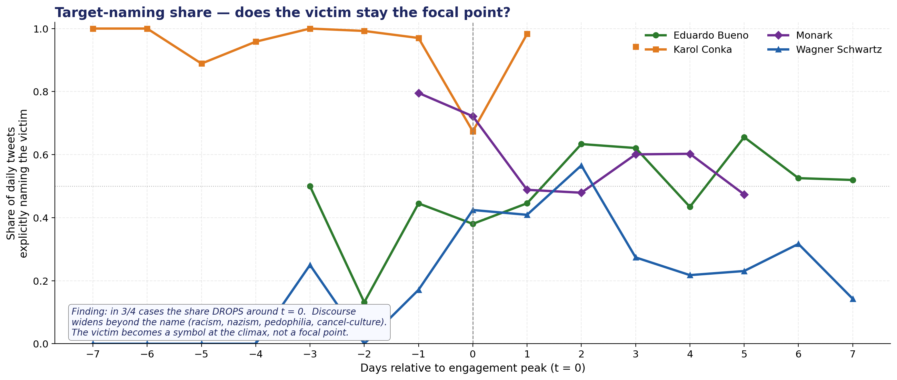

Scapegoat: A NetLogo Agent-Based Model of Scapegoating in Coevolving Networks
Versão completa do artigo do projeto Scapegoat ABM (PDF).
Abrir PDFScapegoat ABM — Modelagem Baseada em Agentes Aplicada ao Fenômeno do Bode Expiatório
Explore nossa simulação, veja a apresentação em vídeo e acesse os artigos e experimentos que mostram como o mecanismo vitimário pode ser estudado em sistemas complexos.

Artigos publicados sobre mimetismo, violência coletiva e mecanismos de sacrifício.
Resultados que combinam duas frentes complementares: simulações do ABM no BehaviorSpace e análise empírica de quatro casos reais de cancelamento no Twitter (Monark, Karol Conká, Wagner Schwartz e Eduardo Bueno).

Coeficiente de clustering ao longo do tempo em 14 execuções do modelo (skepticism = 60, num-nodes = 60). À esquerda, a média (linha vermelha) cai de 0,405 — o baseline pré-ritual — para cerca de 0,27 após o evento sacrificial. À direita, a distribuição da magnitude da queda por run, com média de 39%. A simulação evidencia uma cicatriz topológica persistente após o sacrifício: a rede não retorna à coesão original.

Heatmap normalizado comparando sete métricas do efeito de defensores nos quatro casos empíricos analisados. As métricas incluem atraso na defesa, razão defensor/acusador, polarização do discurso de acusação e indicadores de engajamento (retweets e curtidas). Verde indica valores relativos favoráveis aos defensores; vermelho, favoráveis aos acusadores. A leitura cruzada permite contrastar dinâmicas distintas em cada caso.

Proporção diária de tweets que nomeiam explicitamente a vítima nos quatro casos analisados, alinhados ao pico de engajamento (t = 0). Em 3 dos 4 casos, a menção direta à vítima cai justamente no momento do clímax: o discurso se amplia para temas mais gerais (racismo, nazismo, pedofilia, cancel-culture) e a vítima passa a funcionar como símbolo coletivo, não mais como referência específica.
Uma visão geral do modelo, objetivos e descobertas iniciais.
Entre em contato para dúvidas, sugestões ou colaborações.
© AVISO DE DIREITOS AUTORAIS – Simulação Scapegoat
Todo o conteúdo presente neste material, incluindo seu código fonte, textos, imagens, gráficos e quaisquer outros componentes, está protegido pela Lei de Direitos Autorais (Lei nº 9.610/98) e pela Lei do Software (Lei nº 9.609/98), sendo de propriedade intelectual exclusiva de seu titular.
É expressamente proibida a reprodução, distribuição, modificação, exibição, execução pública ou qualquer outro uso não autorizado do conteúdo, parcial ou integralmente, sem o consentimento prévio por escrito do titular.
A violação destes direitos autorais pode resultar em sanções legais e reparação de danos. Para mais informações ou para solicitar autorização, entre em contato pelo e-mail: paes120@gmail.com